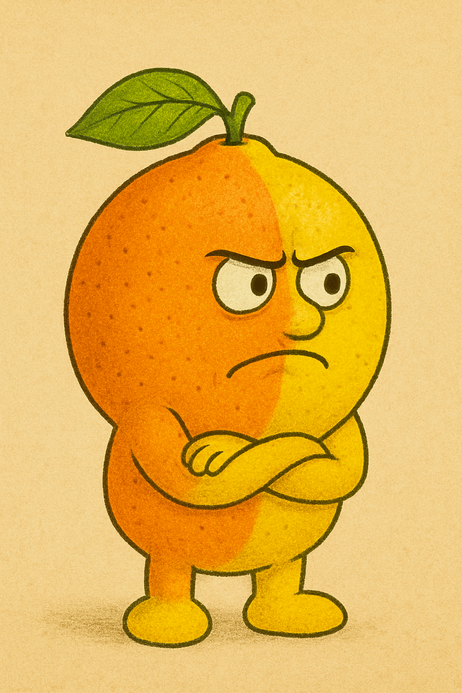
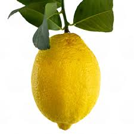

Крутой лимон
Родился под ярким солнцем в лучших лимонных садах, Крутой лимон с юности умел удивлять: он не просто кислый, он с характером. Его яркий вкус делает обычный лимонад чем-то вроде рок-концерта на языке. Если вы хотите добавить щепотку дерзости в свою жизнь или напиток, этот лимон точно не даст вам скучать. Подходит для коктейлей, которые удивляют и запоминаются.
Офисный лимон

Служил в корпоративных садах, где каждый день встречал строгих менеджеров и коллег. Он знает, как быть полезным и незаметным, но всегда помогает поддерживать продуктивность. Этот лимон идеально подходит для чая на рабочем месте — он бодрит, не отвлекая. Ваш кофе или чай с ним — это маленькая победа в серых буднях офиса.
Лимон гангстер
Выращен в тени узких улочек и старых складов, Лимон гангстер знает, как выживать в жестком мире. Его вкус дерзкий и неожиданный, с легкой горчинкой, которая заставляет почувствовать себя на острие событий. Для тех, кто любит драму и хочет, чтобы каждый коктейль или блюдо имели характер. Он добавит «стрелок» в ваш смузи или маринад.
Лимон чинила

Маленький алхимик среди фруктов. Лимон чинила способен оживить любое блюдо и «починить» настроение. У него мягкая кислинка, которая идеально гармонирует с другими ингредиентами. Когда хочется чего-то нежного, но с характером. Добавьте его в салаты, соусы или чай, чтобы почувствовать магию вкуса.
Оранжемон
Ребенок двух миров: сладкий апельсин и кислый лимон. Он родился для тех, кто не хочет выбирать между сладким и кислым. У него сложный и интересный характер. Идеально для коктейлей и смузи, когда хочется яркости и контраста. Он заменит и лимон, и апельсин в одном фрукте.
Ровный лимон
Настоящий классик. Ровный лимон — это надежность и стабильность. Он всегда готов к работе: в чае, лимонаде, выпечке. Не привлекает внимание, но никогда не подведет. Для тех, кто ценит традиции и хочет универсальный, проверенный вкус. Без лишней драмы, но всегда вкусно.